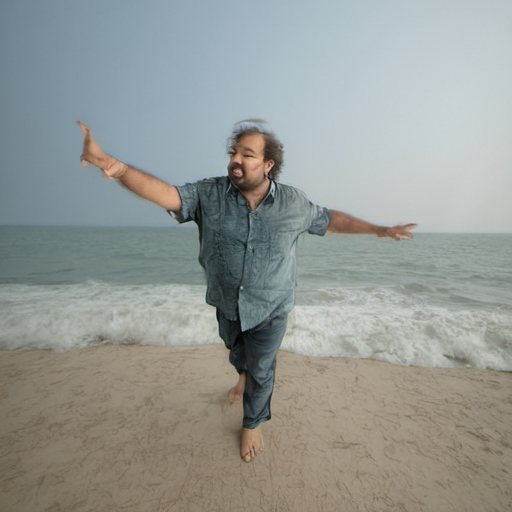
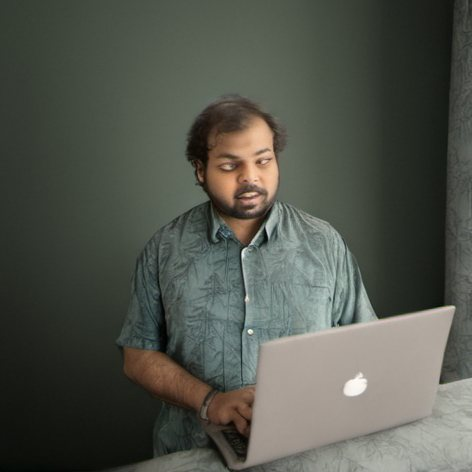
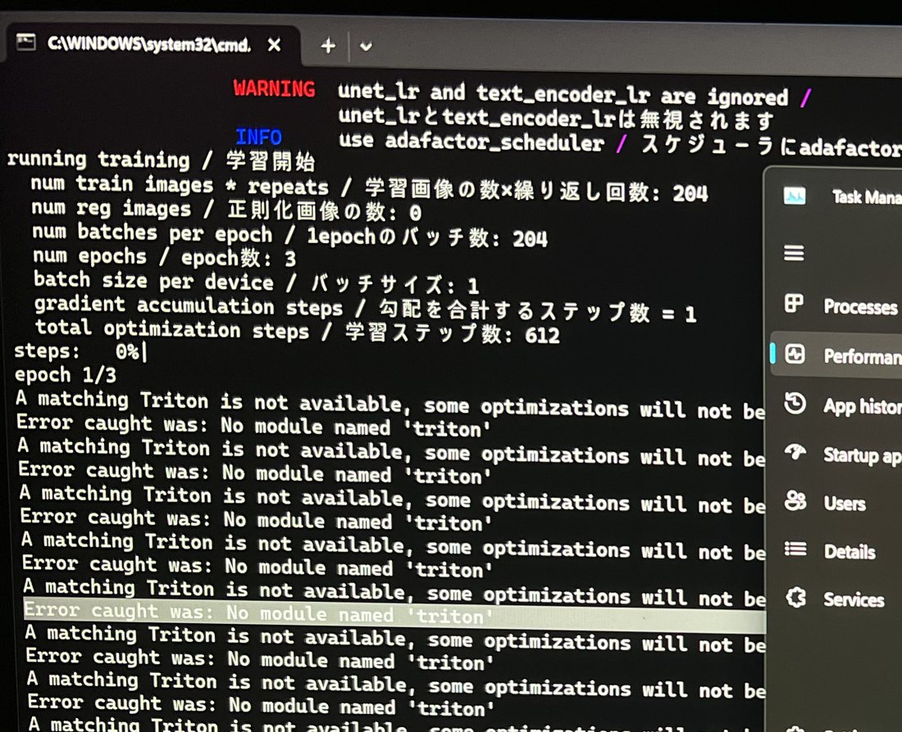
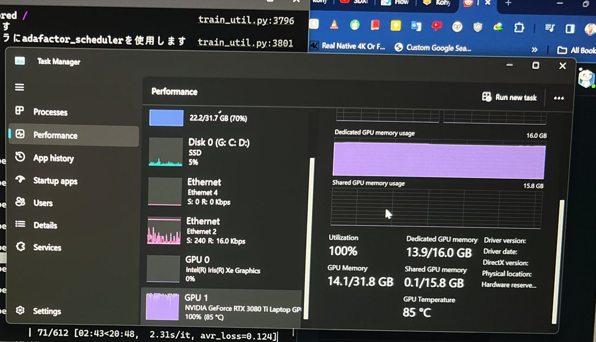
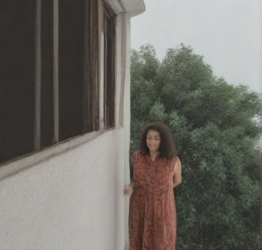
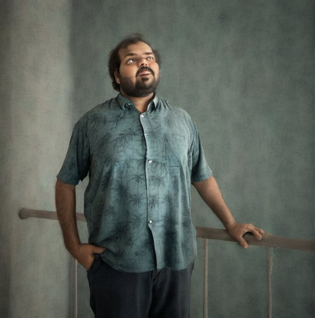
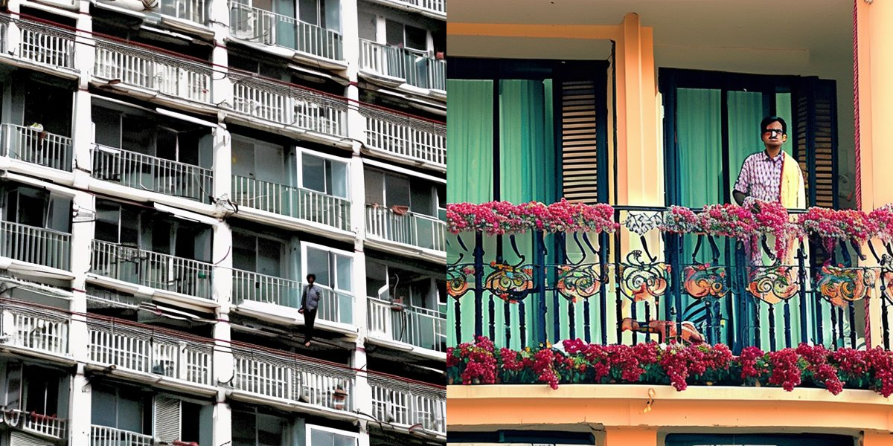
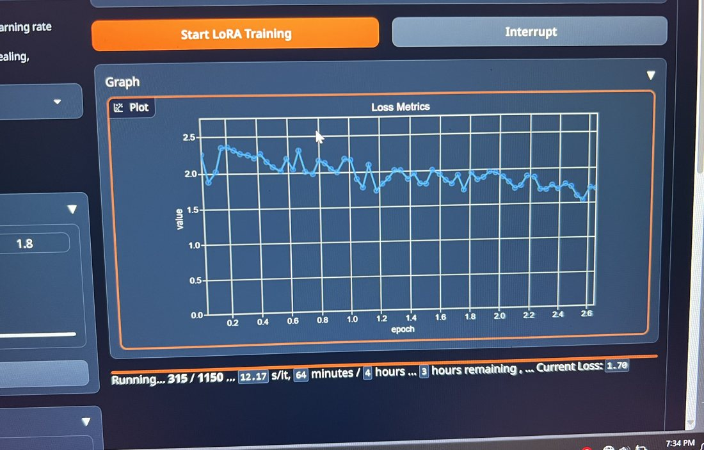

MSc AI · Deep Learning (CT100) · submitted 1 Mar 2024
Teaching SDXL my face
Stable Diffusion XL has never seen me. I taught it with a LoRA: a few small extra weight matrices trained on 34 photos, in 19 minutes on a laptop GPU, with the 6.9 GB base model left untouched. Then I compared it against Textual Inversion and kept a record of everything that broke.

satyam guy dancing on the beachsatyam guy at the airport, looking at the camera
satyam guy on a laptopWhy a LoRA
Retraining a foundation model to add one new person is wildly expensive. A LoRA learns the difference instead.
The idea
SDXL makes images by denoising in a compressed latent space with a large U-Net, steered by two text encoders. LoRA (Hu et al., 2021) freezes all of that and adds a pair of thin low-rank matrices beside the attention layers. Only those are trained, so the result is a small file you load on top of the base model, and you can switch it on or off per prompt with <lora:TrialV1:1>.
The question
Can mixed-precision (bf16) training on a laptop RTX 3080 Ti make this fast enough to be practical? And how does it compare with Textual Inversion, which only learns a new word embedding and leaves the image model's weights alone?
The data
34 iPhone photos of me at 3024×4032, on a black backdrop so the subject is easy to separate.
All 34 training photos
Many head angles, one outfit, waist up. That made it quick to shoot, and it shows in the results below.
How kohya_ss reads the folder
- Repeats
- 6: each photo is seen 6 times per epoch (about 200 views / 34 photos)
- Trigger
- satyam: a word the model has no prior meaning for
- Class
- guy: the general category the subject belongs to
- Captions
- BLIP, beam search (15 beams), prefixed with
satyam,
A real caption: satyam, a man in a blue shirt is looking down. I skipped regularisation images, which would have meant generating about 204 extra images of "a guy".
What the iPhone saw
I shot the set in Portrait mode on an iPhone 13 Pro Max, so every photo carries a depth map and Apple's segmentation mattes. Move your pointer over the photo, or tilt your phone.
Why this mattered for training
The background looks black, but switch to Depth and the room is still there: the wall behind me, just unlit. That dark falloff is what made the subject so easy to separate, and also why the LoRA later painted dark walls behind me.
The Subject, Hair and Skin layers are Apple's own mattes, saved alongside the photo. They show the separation my report relied on: the subject is cleanly cut out, hair included.
56 shots, 34 kept
All shot on 28 Feb 2024 between 18:01 and 18:07. The first takes above are warmer and framed tighter; the 34 used for training came from a cooler, wider pass a few minutes later. Location data was removed from every photo published here.
The training run
Straight from the TensorBoard log: 29 Feb 2024, 04:51, 612 steps in about 19 minutes.
Loss over 612 steps
Per-step loss in diffusion training jumps around (from 0.001 to 0.48 here), because each step picks a random noise level. So this shows a 25-step rolling mean alongside the trainer's running average, which ends at 0.0996. Hover for exact values.

No module named 'triton'. It trained anyway.
Photos of the screen, taken while it trained. Getting this far took a fight with the installer: two Python versions (3.10 and 3.12) side by side broke kohya_ss until one was removed. This was early 2024, before any of this was one click.
Settings that mattered
- Base model
- sd_xl_base_1.0
- Trainer
- kohya_ss (Python 3.10, Anaconda env)
- Steps
- 34 photos × 6 repeats × 3 epochs = 612
- Precision
- bf16 mixed precision
- Optimizer
- Adafactor
- Learning rate
- about 2.1×10-4 text encoder, 2.3×10-4 U-Net, as logged. The console warned
unet_lr and text_encoder_lr are ignored: with the Adafactor scheduler, the optimiser picked its own rates. - GPU
- RTX 3080 Ti Laptop GPU, 16 GB
- Resolution
- 512 px training, to fit memory
- Output
TrialV1.safetensors, 912 MB, saved 29 Feb 2024; loaded in Automatic1111 v1.7.0 with triggersatyam guyat a preferred weight of 0.87
Why bf16
bf16 keeps FP32's 8-bit exponent and gives up mantissa instead, so it covers the same range of values without loss-scaling tricks. On Ampere tensor cores it runs at several times FP32 throughput. That combination is what made a 19-minute run possible.
The same idea on a T4 (Turing, fp16 only) took hours longer, which is half of the comparison below.
The trigger word is the switch
Same LoRA loaded both times. Only the prompt changes.

in a balcony. The model invents a stranger.
satyam guy in the balcony. The likeness locks in.My first 16 outputs used prompts like "superman outfit" or "in a balcony" with no trigger. They were hit and miss: sometimes me (output 12), often a stranger (outputs 10 and 13). From output 16 on, every prompt starts with satyam guy (the trigger plus the class), and the likeness becomes consistent.
LoRA vs Textual Inversion
Textual Inversion learns one new word embedding and leaves the image model's weights alone. LoRA adds new weights to the model itself.
| LoRA | Textual Inversion | |
|---|---|---|
| Base model | SDXL 1.0 | SD 2 |
| GPU | RTX 3080 Ti Laptop, bf16 | T4, fp16 |
| Seconds per step | 1.95 | 4.43 |
| Final loss | 0.0996 | 0.475 |
| Steps | 612 | 2,000 (batch 4) |
LoRA numbers are from the training log (1.95 s × 612 steps ≈ 19.9 min, matching the 19 minutes logged). The Textual Inversion speed and loss are as recorded in my report. The two runs used different base models and GPUs, so read this as practical experience rather than a controlled benchmark.
Same idea, two methods

satyam guy on a balcony, 30 steps. It got my skin tone and facial structure right, and little else.Textual Inversion only gets a new word to point at things the model already knows. It got my facial structure and skin tone, but not a likeness. The LoRA can change what the model draws, and it produced my actual face.
Two weeks later: my thesis
The same low-rank idea, applied to a language model. In March 2024 I fine-tuned Mistral 7B on Shakespeare for my MSc thesis, on this same laptop.

Mistral 7B, in Shakespeare's voice
QLoRA: the 7B model frozen in 4-bit, a rank-128 adapter trained on top. Four runs in one day, 859 steps in 3.8 hours, and an honest look at what the fine-tuned model got wrong.
Read the thesis project →What went wrong
Every failure here traces back to a choice I made, which is the useful part.
- The shirt is part of "me" now. All 34 photos show the same patterned blue shirt, so the LoRA learned it as part of my identity. It turns up at the airport, on the beach and in the sky.
- The backdrop leaks. Black backgrounds made the subject easy to isolate, but plain dark walls keep appearing behind me in scenes that should have a setting.
- No legs in the data. Every photo is waist up, so whenever a prompt needed my full body the model had to guess what the rest of me looks like.
- Mixing model families. I tried an SD 1.5 refiner (epiCRealism) on the SDXL base. The two don't share a latent space, so the image turns to noise (outputs 37 and 38).
- Too few steps. At 10 sampling steps the face broke into colour blotches (output 26). Most of the good outputs used 20 steps.
- What I'd change: several outfits, full-body and seated shots, real backgrounds, and a regularisation set of generic "guy" images to keep the class broad.
All 44 outputs
Every image I generated, in order, with its real prompt and settings. Failures are outlined.
All outputs: SDXL 1.0 base with the LoRA at strength 1, Automatic1111 v1.7.0, CFG 7 (one at 6). Most are 512×512.